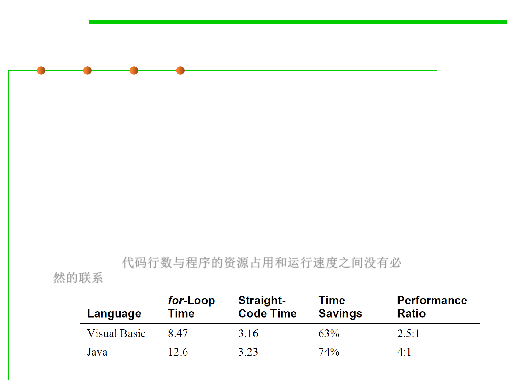

(1) LoC vs. Efficiency
8.3 Code Tuning for Performance Optimization
▪ Reducing the lines of code in a high-level language
improves the speed or size of the resulting machine
code—false!
for(i=0;i<5;i++)
A[i] = i;
-----------------
A[0]=0
– This certainly doesn’t imply the conclusion that increasing the
A[1]=1
number of lines of high-level language code always improves
A[2]=2
speed or reduces size.
A[3]=3
– It does imply that regardless of the aesthetic appeal of writing
A[4]=4
something with the fewest lines of code, there’s no
predictable relationship between the number of lines of
code in a high-level language and a program’s ultimate size
and speed. 代码行数与程序的资源占用和运行速度之间没有必
然的联系